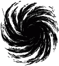
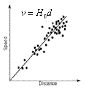

Learning Objectives
After reading the background information and working through all exercises of the Hubble's Law Simulator, the student will understand that...
- all galaxies are moving away us
- the velocity v with which a galaxy is moving away from us is proportional to its distance d
- v ~ d is known as Hubble's Law
- observers in every galaxy see themselves at the center of a similar expansion (they observe Hubble's Law)
- there is no center to the universe (every observer sees themselves at the center of the expansion)
Background Information
In the 1920's, Edwin Hubble was studying galaxies. He took spectra and from the redshifts of the spectral lines determined the velocities of the galaxies. He then found pulsating variable stars (stars that periodically vary in brightness) known as Cepheid variables in the galaxies. Cepheids obey a period-luminosity relation meaning that larger brighter Cepheids pulsate with larger periods while smaller fainter Cepheids have smaller periods. Thus, observing the pulsation periods of the Cepheids allowed him to estimate their luminosities and ultimately the distances to the galaxies.
When he graphed the galaxy's velocities versus distance he found two interesting things:
- All galaxies (except a few of the closest galaxies moving around our local group's center of mass) are moving away from us. The universe is expanding.
- The velocities of recession are correlated with distance. The farther away a galaxy is from us, the faster it is moving away from us. We express this as Hubble’s Law.

Velocity v is equal to a constant H0 (pronounced H-naught) times distance D. H0 is known to have a value of about 70 km/sec/Mpc. So for each Mpc a galaxy is away from us, its velocity of recession increases by 70 km/s. A galaxy 1 Mpc away has a velocity of 70/km/s, a galaxy 2 Mpc away has a velocity of 140 km/s, and so on.
Note that we often talk about galaxies moving away from us, but what is really happening is that space itself is being created which pushes the galaxies away from us. There is more space between us and a distant galaxy than a nearby galaxy. Thus, when space itself expands, it pushes the distant galaxy away from us by a greater amount.
Exercises
- Zoom out until you can see a bunch of galaxies. The galaxy with the red circle around it represents your location (the Milky Way). The red arrows represent the galaxies’ velocities. Can you find a galaxy that is moving toward you?
- The arrow lengths convey how fast galaxies are moving.
- Describe the velocities of galaxies nearby your location.
- Now describe the velocities of galaxies that are far away.
- Is it true in every direction? Do you see yourself at the center of the expansion?
- State Hubble’s Law in your own words.
- Click on a different galaxy to make it the observation point. Is Hubble’s Law still in effect? Do you still see yourself at the center of the expansion? Repeat for several other galaxies.
- Pick out a pair of galaxies both visible on the screen at the same time. Select one galaxy as the observation point and then switch to the other. Repeat this operation switching back and forth between the two galaxies. How would you describe the relationship of the two vectors that appear on those galaxies?
- What will the universe look like a long time in the future?
About
This astronomy "Little Big Picture" was programmed by REU student Nick Robe. It is an early effort of the UNL Astronomy Education Group to provide materials for mobile devices. More astronomy teaching materials can be found on the web at astro.unl.edu.
This simulation makes use of the Dojo tooklit available at dojotoolkit.org.